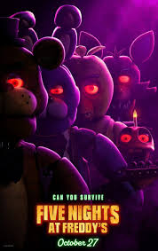

Five Nights at Freddy's (FNaF) é uma série de jogos de terror criada por Scott Cawthon. O enredo gira em torno de um segurança noturno que trabalha em um restaurante temático chamado Freddy Fazbear's Pizza, que é similar ao Chuck E. Cheese. O local é conhecido por seus animatrônicos, que são robôs projetados para entreter crianças durante o dia.
No entanto, à noite, esses animatrônicos ganham vida de maneira sinistra e são, na verdade, responsáveis por uma série de eventos terríveis. O objetivo do jogador é sobreviver a cada noite (normalmente de meia-noite às 6 da manhã) enquanto lida com a ameaça desses animatrônicos, que se tornam cada vez mais agressivos.
A história se desenrola através de pistas encontradas no jogo, em fitas cassete, e em outros detalhes ambientais. Descobre-se que os animatrônicos estão possuídos pelos espíritos de crianças desaparecidas, e o restaurante tem um passado sombrio envolvendo assassinatos e eventos traumáticos.
Cada jogo da série adiciona novos personagens, mecânicas e expandem a história, aprofundando o mistério e o lore da franquia.
